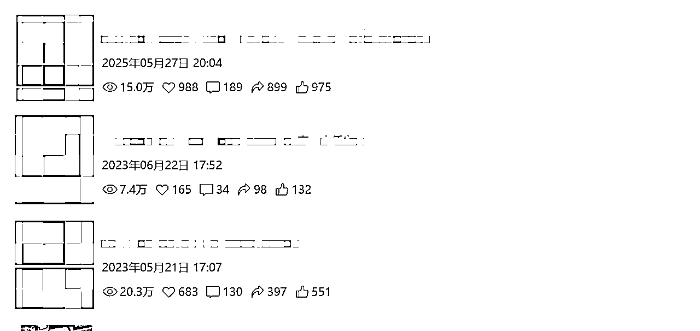
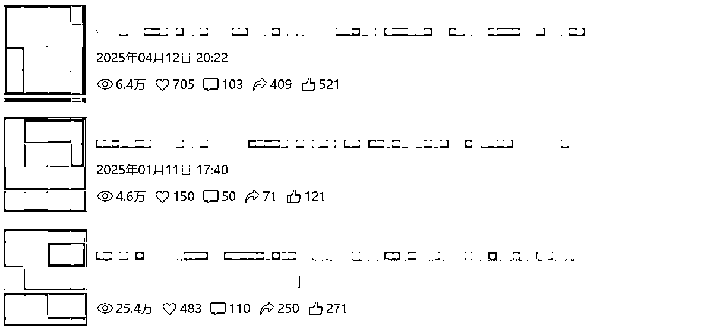
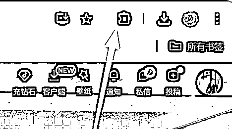
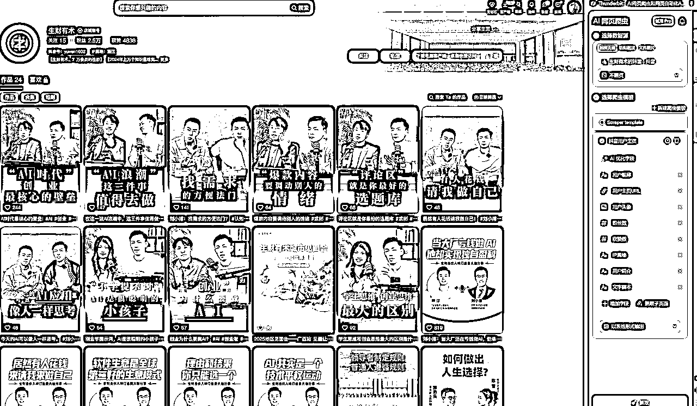
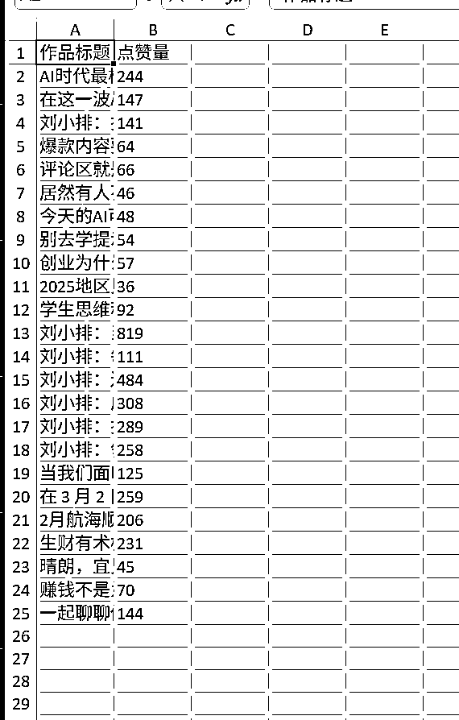

借助AI做选题，本地生活月入5万
来源：https://canzhidaocrm.feishu.cn/docx/VIhsdaZKJoku4jx7DG9c0ahOnJH
做本地生活3年，业绩一直无法突破，遇到最大的问题，就是不知道拍啥，因为业务往往都是同质化的，AI也出来三年了，最近也开始研究琢磨，终于有了突破，目前借助这个方法，我的本地生活业务实现突飞猛进，可以批量接单了（选题自己来，拍摄，剪辑，发布统统外包），晒下今年的工作量：已经剪辑1288个作品，今年目标3000条。




（由于客户还在合作，且所有账号都是商业号，不便直接展示）
开始进入正题：
做短视频最难的，
不是怎么拍，而是拍什么
一旦你有1000个拍摄内容，集中在1-2个月内拍完，剩下的时间就是去发作品，接待客户，收钱。
你有没有选题焦虑？
但大多数人每天都在焦虑到底拍什么，不光是我有过这样的焦虑，全国13亿个账号，都有过这个焦虑，甚至我们遇到的大佬，乃至生财，乃至看这个文章的你，也被这个事情狠狠折磨过！
短视频选题的思路如下：
1，参照自己之前火过的作品，再微调整，出新作品，
2，参照对标账号火过的作品，出新作品，
3，重复1和2。
鉴于此，我们现在有了AI，用AI做这个事情，就很容易了！
AI做选题大概的路径：
- 自己账号，直接下载数据
- 非自己账号，工具爬取
- 导入gpt：输入提示词
- 生成新的100个选题
- 多次生成，筛选，然后在这新的选题找符合你的选题
自己账号，直接下载数据
- 打开网页版https://creator.douyin.com/

非自己账号，工具爬取
- 如果账号不是自己的，要么用付费工具导出，如果没有，这里提供一个免费的工具thunderbit，需要趴墙
- 打开chrome，下载地址https://www.google.com/intl/zh-CN/chrome/
- 在地址栏输入https://chromewebstore.google.com/search/thunderbit?hl=zh-CN&utm_source=ext_sidebar
- 在chrome打开你的对标账号，比如生财的https://www.douyin.com/user/MS4wLjABAAAAtW6-fPBMOJM5J18bMOscVHeBRMu8bUARLjlGOcOEt5o?from_tab_name=main
- 如果你遇到作品数量超过100，比如有3000个作品，需要在本页面持续下拉，直至页面显示所有作品


我们选择新建爬虫模板，不点击AI推荐字段，选择手动，只获取2个字段，如图

点击爬取
点击打开

下载

PS：这个工具不要乱点，避免账号被强制升级无法使用，当然如果你是用短视频赚钱的，可以直接购买
导入gpt：输入提示词
打开GPT或者你经常使用的AI工具，这里以gpt4.1为例，复制以下提示词：（黄色的部分可以根据你的账号去写，这里以生财为例）
以上是本账号数据，数据结构为作品标题和点赞量，作品标题包含作品的核心内容，点赞量代表流量大（生财有术，知识付费平台，目的是增加外部影响力，同时吸引更多的人付费入会）的选题数据，分析这个数据，找到流量爆点，给我出100个选题，请不要严重的商业化，避免违规封号，尽可能用讲故事的形式，同时爆点前置，,请用中文进行输出，请深度理解，在框架的时候，考虑到评论区尽可能出现冲突内容，注意验证事实，这样评论区能炸锅
然后复制刚才下载的表格，把文本复制在最前。
ps:如果你遇到的ai工具支持联网的同时也能上传文件，就不用复制了。
最后检查下搜索按钮是打开的，提交
（这里的灵感来自于https://t.zsxq.com/agoA7 大家也可以从他的代码里挖掘新的提示词关键词）
生成新的100个选题

以下是gpt给的选题列表
根据您提供的作品标题和点赞量数据，我们可以从中提炼出一些成功的选题策略，以便为您制定100个新的选题建议。
🔍 数据分析与选题策略
1. 核心人物与故事驱动
以“刘小排”为核心的人物故事多次出现在高点赞量的作品中，如“刘小排：当大厂还在亏钱做AI，他单枪匹马闷声发大财”（819点赞）和“刘小排：边际成本近乎为零，为什么软件生意是全球第二好的生意？”（484点赞）。
策略建议：围绕“刘小排”展开更多关于AI创业、软件生意、边际成本等方面的故事，突出其独特的商业思维和成功经验。
2. 引发讨论的选题
如“评论区就是你最好的选题库”（66点赞）和“别去学提示词，AI是很聪明的小孩子”（54点赞），这些作品通过引发观众的思考和讨论，成功吸引了大量互动。
策略建议：提出有争议或引发深思的问题，鼓励观众在评论区发表意见，从而提升互动率和点赞量。
3. 聚焦实际操作与案例分享
作品如“在这一波AI浪潮中，这三件事值得做!”（147点赞）和“刘小排：技术平权时代，你的优势如何被 AI 放大？”（289点赞）强调实际操作和案例分析，具有较高的实用性和吸引力。
策略建议：分享具体的操作步骤、成功案例或失败经验，帮助观众在实际操作中获得启发和指导。
4. 情绪调动与共鸣
如“居然有人花钱请我做自己！”（46点赞）和“今天的AI可以像人一样思考。”（48点赞），这些作品通过情绪化的表达方式，引发观众的共鸣和关注。
策略建议：运用情绪化的语言和表达方式，讲述个人经历或行业现象，激发观众的情感共鸣。
🧠 100个选题建议
基于上述分析，以下是100个新的选题建议，旨在提升互动率和点赞量：
- 刘小排：从0到1的AI创业心路历程
- AI时代，普通人如何逆袭成功
- 技术平权：AI如何改变你的职业生涯
- 边际成本为零，软件生意的无限可能
- AI创业者的日常：16小时的工作挑战
- 从大厂到独立创业：刘小排的转型之路
- 如何在AI浪潮中找到属于自己的机会
- 评论区热议：AI将取代哪些职业？
- AI写作：机器与人类的合作还是竞争？
- 技术平权时代，你准备好了吗？
- AI赋能下的创业新机遇
- 从学生思维到创业思维的转变
- 边际成本为零的商业模式解析
- 如何在AI时代保持竞争力
- AI创业者的心态与成长
- 从0到1的AI产品开发经验分享
- 如何利用AI提升工作效率
- AI写作工具的使用技巧与心得
- AI时代的创业者必备技能
- 如何在AI浪潮中找到自己的定位
- AI赋能下的商业模式创新
- 从大厂到独立创业的心路历程
- 如何在AI时代保持学习的动力
- AI时代的创业者如何管理时间
- AI写作：机器与人类的协作模式
- 如何在AI浪潮中找到自己的优势
- AI赋能下的创业者如何提升自我
- 从学生思维到创业思维的转变经验
- 边际成本为零的商业模式实践
- 如何在AI时代保持创新的思维
- AI创业者的心态调整与成长
- 从0到1的AI产品开发实战经验
- 如何利用AI提升个人品牌
- AI写作工具的高效使用技巧
- AI时代的创业者如何管理团队
- 如何在AI浪潮中找到合作伙伴
- AI赋能下的商业模式转型
- 从大厂到独立创业的挑战与机遇
- 如何在AI时代保持持续学习
- AI时代的创业者如何提升执行力
- AI写作：机器与人类的协同创作
- 如何在AI浪潮中找到自己的节奏
- AI赋能下的创业者如何提升影响力
- 从学生思维到创业思维的转变故事
- 边际成本为零的商业模式案例分析
- 如何在AI时代保持敏锐的洞察力
- AI创业者的心态调整与实践经验
- 从0到1的AI产品开发流程解析
- 如何利用AI提升工作效率的技巧
- AI写作工具的使用心得与体会
- AI时代的创业者如何管理时间的艺术
- 如何在AI浪潮中找到自己的定位与方向
- AI赋能下的商业模式创新案例
- 从大厂到独立创业的心路历程分享
- 如何在AI时代保持持续学习的动力
- AI时代的创业者如何管理团队的技巧
- 如何在AI浪潮中找到合作伙伴的策略
- AI赋能下的商业模式转型案例
- 从学生思维到创业思维的转变经验分享
- 边际成本为零的商业模式实践案例
- 如何在AI时代保持创新的思维方式
- AI创业者的心态调整与成长经验
- 从0到1的AI产品开发实战经验分享
- 如何利用AI提升个人品牌的策略
- AI写作工具的高效使用技巧与心得
- AI时代的创业者如何管理团队的挑战
- 如何在AI浪潮中找到合作伙伴的机会
- AI赋能下的商业模式转型经验分享
- 从大厂到独立创业的挑战与机遇分析
- 如何在AI时代保持持续学习的动力源泉
- AI时代的创业者如何提升执行力的技巧
- AI写作：机器与人类的协同创作模式
- 如何在AI浪潮中找到自己的节奏与方向
- AI赋能下的创业者如何提升影响力的策略
- 从学生思维到创业思维的转变故事分享
- 边际成本为零的商业模式案例分析与实践
- 如何在AI时代保持敏锐的洞察力的技巧
- AI创业者的心态调整与实践经验分享
- 从0到1的AI产品开发流程解析与实战经验
- 如何利用AI提升工作效率的技巧与心得
- AI写作工具的使用心得与体会分享
- AI时代的创业者如何管理时间的艺术与技巧
- 如何在AI浪潮中找到自己的定位与方向的策略
- AI赋能下的商业模式创新案例分析与实践
- 从大厂到独立创业的心路历程分享与反思
- 如何在AI时代保持持续学习的动力源泉与方法
- AI创业者的心态调整与实践经验分享
- 从0到1的AI产品开发流程解析与实战经验分享
- 如何利用AI提升工作效率的技巧与心得
- AI写作工具的使用心得与体会分享
- AI时代的创业者如何管理时间的艺术与技巧
- 如何在AI浪潮中找到自己的定位与方向的策略
- AI赋能下的商业模式创新案例分析与实践
- 从大厂到独立创业的心路历程分享与反思
- 如何在AI时代保持持续学习的动力源泉与方法
- AI时代的创业者如何提升执行力的技巧与策略
- AI写作：机器与人类的协同创作模式与实践
- 如何在AI浪潮中找到自己的节奏与方向的策略与实践
- AI赋能下的创业者如何提升影响力的策略与实践
这些选题建议旨在通过讲述具体的操作步骤、成功案例或失败经验，帮助观众在实际操作中获得启发和指导。同时，运用情绪化的语言和表达方式，讲述个人经历或行业现象，激发观众的情感共鸣，提升互动率和点赞量。
如果您需要进一步的细化或针对特定主题的选题建议，请随时告知，我将竭诚为您服务。
多次生成，筛选，然后在这新的选题找符合你的选题
实际使用中，由于行业或者提示词，以及提供数据质量的问题，那么我们要在以下几个地方优化：
提示词优化，尽可能提供多的信息维度
数据质量，可以把多个账号的数据一起给AI
多次生成，比如生成500个，然后再喂给AI
感谢观看，欢迎留言交流